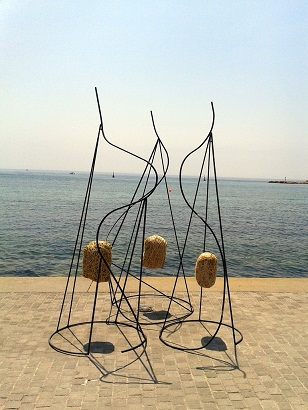
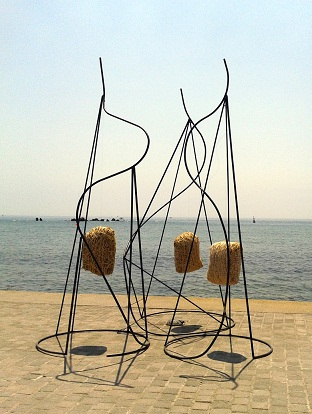

Φεστιβαλ Τέχνης Κάτω Πάφος, 2011
Διαδρομές
20 Αυγούστου, 2011Λιμανάκι, Κάτω Πάφος, Κύπρος
Οι κατασκευές του Χάρη πασπαλλή συλλαμβάνουν τις περιπέτειες της ζωής σ ’ένα κέλυφος αποκαλύπτοντας προσπάθειες, επιτυχίες και αποτυχίες με το να συνδέει δύο διαφορετικά και ετερογενή υλικά μεταξύ τους.
Αντιπαραθέτει την σκληρότητα του μετάλλου και την ανάλαφρη μεταξένια ποιότητα του κουκουλιού το οποίο συνυπάρχει στο κέντρο της σύνθεσης σαν την καρδιά αντιπροσωπεύοντας έτσι την ευαισθησία και το συναίσθημα αψηφώντας τον εσωτερικό κόσμο της περιπλοκότητας ενός ατελείωτου πολέμου εναντίων όλων των αγωνιών σε μία ατελείωτη ροή των γεωμετρικών γραμμών , ευθειών ,στρογγυλών , κυρτών και κοίλων.
Είναι μία προσωπική σύγκρουση της συνείδησης παράγοντας γλυπτικές φόρμες σε σχήματα ονείρων ή εφιαλτών .
|  |
 |
|
220(ύψος)x100(διάμετρος)
|
|